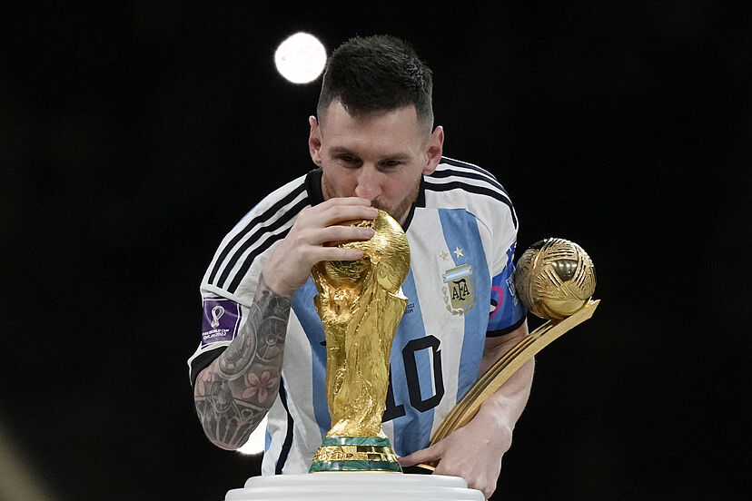

En esta pagina encontraremos una lista de los partidos de futbol con mas audiencia de la historia de este deporte.
Resumidamente, pondremos el contexto de cada uno de los partidos, para que la gente pueda saber el ¿por que? han sido tan vistos.
A parte de esta información, también añadiremos si los partidos son a nivel naciones o nivel de clubes.
Creo que este tipo de partido se merece un apartado para el solo y con explicacion mas detallada.
Este en lo alto del podio, se considera de los partidos mas vistos en la historia de este deporte (4.000 millonres).
En los siguientes enlaces te dejo una recopilación de los 3 momentos mas tensos presenciados durante este tipo de partido:
Siendo una de las finales del mundo mas vistas, el Francia vs Argentina de Qatar 2023, superó todo tipo de records a nivel de audiencia (1.500 millonres) en un partido de naciones
Uno de los motivos mas importantes, Leo Messi, tenía la última oportunidad antes de retirarse de Argentina, de conseguir su primera copa del mundo
También una de las finales con mas audiencia (11 millonres), todo por la misma razon que la anteriormente mencionada.
Leo Messi tenia probablemente su penúltima oportunidad para conseguir ese ansiado trofeo.
Una de las finales mas vistas de la historia de la Champions League (5 millonres)
Por varios motivos, se juntaron la pandemia lo cual obligaba a disputarse el partido a puerta cerrada, y que el PSG tenia la oportunidad de conseguir su primer titulo.
.
(14 millonres) de personas vieron este partidazo, pero no todos la recuerdan con mas cariño que la recordamos nosotros
España estaba frente a su primera (y única hasta el momento) de llevarse su primera copa del mundo frente a los Holandeses.
.